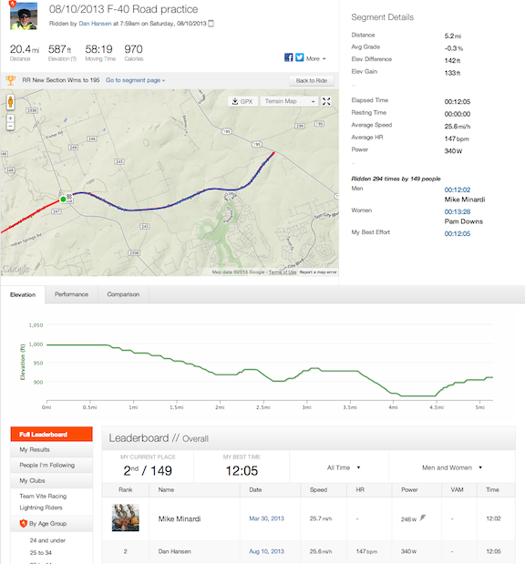

Strava 2nd place KOM - 5.2 miles @ 25.6 mph
10 Aug 2013
Today was a no-wind morning and I really able to open up the speed on the F-40.
Did an hour ride averaging 20.1 mph including stopping to put back on a jumped chain.
On my favorate strava segment I only pulsed the brakes when the bike got over 35 mph a couple of times on the downhills.
This got me to number 2 on the strava segment KOM. I missed being first by 3 seconds - bummer.
I’m sure that when I acclimate to the bike I’ll be faster.
The best I ever did on this segment with the Musashi with fresh legs and wind at my back was 21.1 mph giving me 49th place on the KOM.
http://connect.garmin.com/modern/activity/356417429
http://app.strava.com/activities/73578895#1453965224
